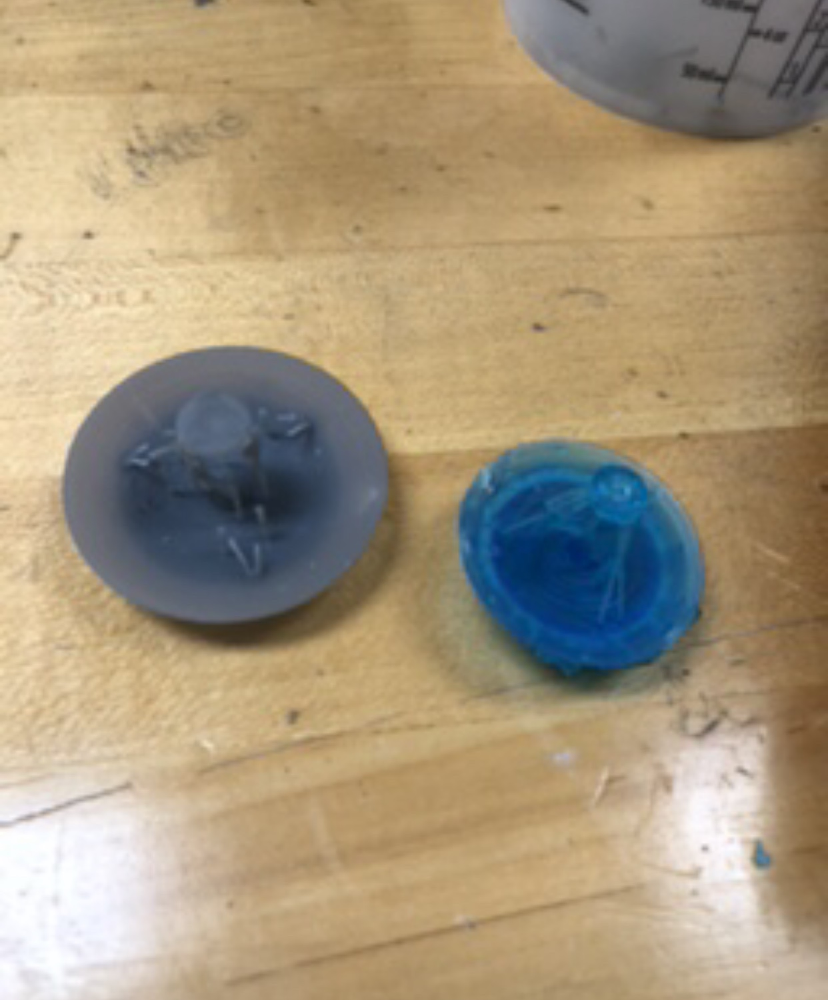
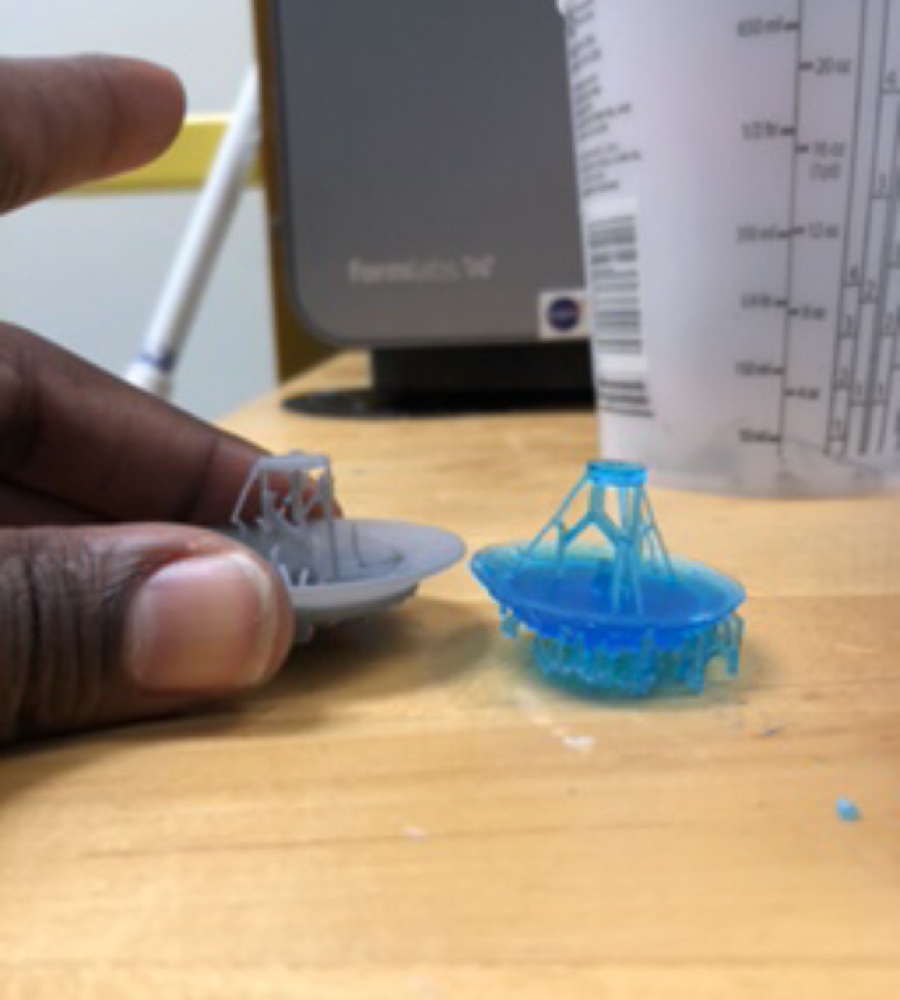
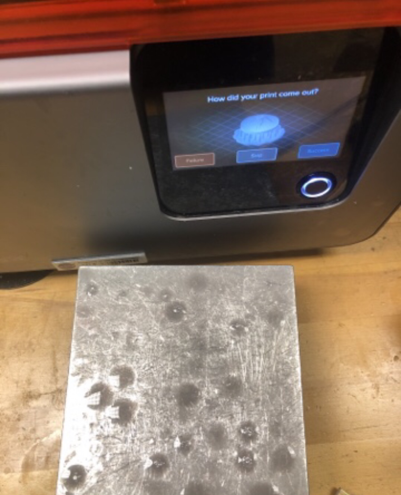
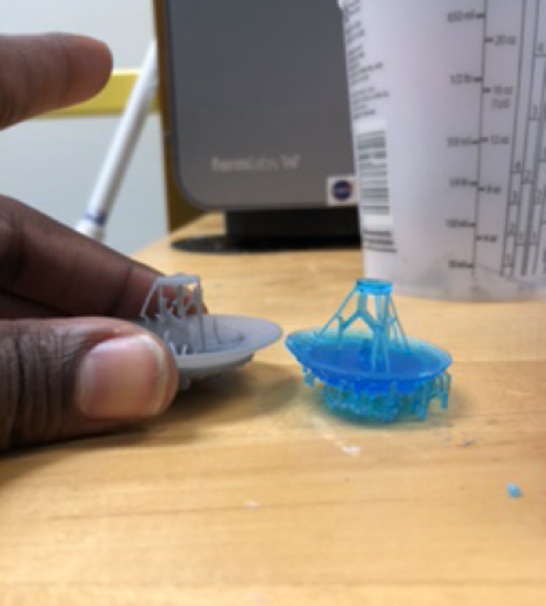
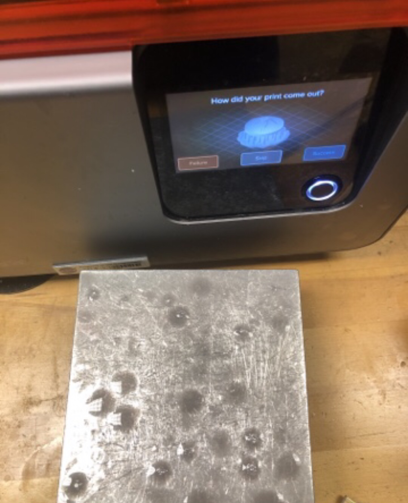
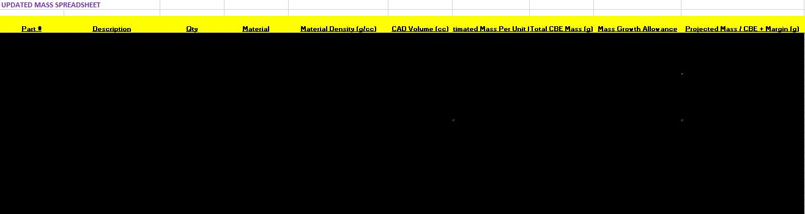

NASA: Materials Science and 3D Printing
Objective:
With more innovative and efficient ways to utilize 3D Printing concepts, the demand for NASA to research has become more aware. working with the Mechanical Engineering Branch - Mechanical Ground Support Equipment and 3D Printing, I had the opportunity to work in a lab and research different material science concepts. Printers used in my lab included a SLA Stereolithography 3D laser printer, by Form Labs. We often used various printers to extrude different materials from Ultem9085, Pekk, resins, etc. One method we would use to change properties of designed print was electroplating materials. We could use different materials such as Nickel, or Aluminum, contingent on materials and projects. Prototypes would be cured after printing in a UV light station, and have supports clipped for further definition and accuracy of designs. Electroplating was done by a contractor, in which they immersed prototypes in water, salt with metal solutions, and then passing an electrical current through mixture - allowing a thin metal film to be formed on the exterior. One study from Brookhaven National Laboratory, where they studied and conducted tests to look at certain elements to make materials withstand lower temperatures. A NASA physicist, wanted my department to see how close certain experiments could be to getting a certain part to hold up in near zero kelvin - in deep space. After parts were sent back to NASA from the contractor, we would take the electroplated coupons, and determine quality from different materials and thicknesses by doing a various array of testing - where we looked at tensile strength, yield strength, ductility, etc.



Additional work completed in materials, included keeping track of masses for WFIRST Sunshield. This mean ensuring proper numbers fit for quantity, materials staying consistent (and ensuring metail is not overweight), densities matching with volume of CAD and specified materials, masses per unit, mass growth allowence, and projected final masses. These were critical, as we were able to stay under a predetermined weight limit, based on satellites other instruments and payload.


Additional work completed in materials, included keeping track of masses for WFIRST Sunshield. This mean ensuring proper numbers fit for quantity, materials staying consistent (and ensuring metail is not overweight), densities matching with volume of CAD and specified materials, masses per unit, mass growth allowence, and projected final masses. These were critical, as we were able to stay under a predetermined weight limit, based on satellites other instruments and payload.
